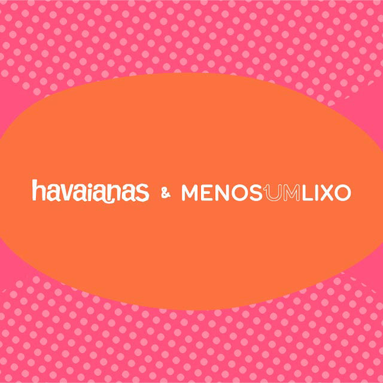
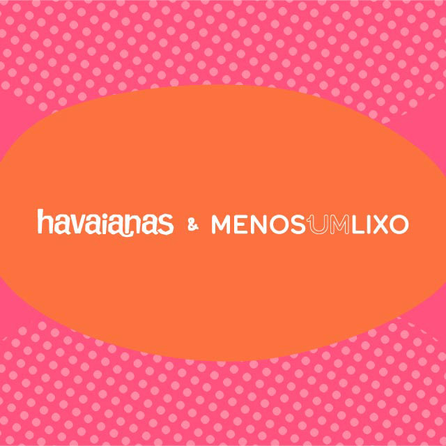

Havaianas | 2023
Conteúdo de marca
Criação de identidade visual e peças para campanha informativa em parceria com Havaianas, promovendo o programa de economia circular e reciclagem “Havaianas reCICLO”. O objetivo foi aumentar o engajamento com o descarte consciente por meio de uma linguagem acessível, visualmente impactante e estratégica para canais digitais. Liderei a equipe criativa no desenvolvimento de key visual e apresentação conceitual da campanha.
Identidade visual | Direção de arte | Projeto gráfico e diagramação
 
